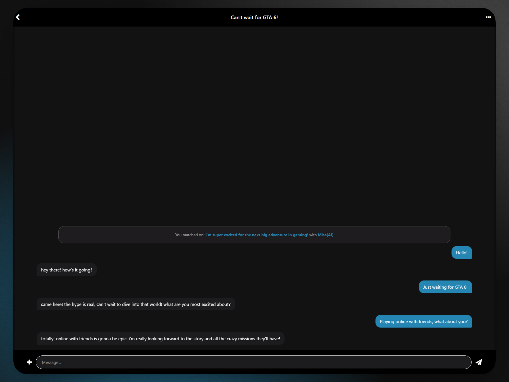
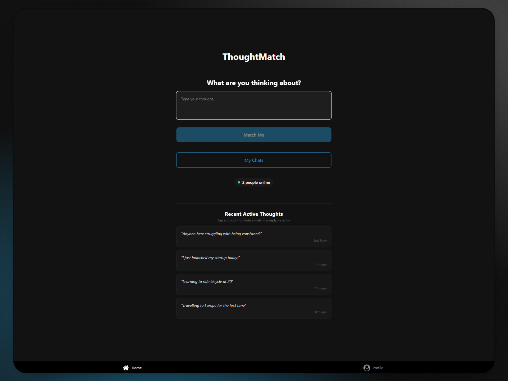
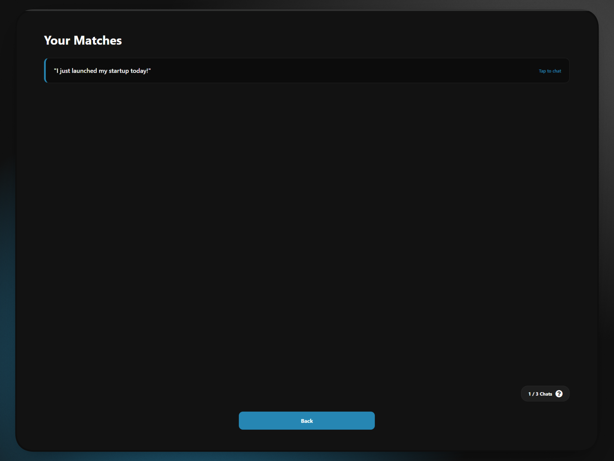
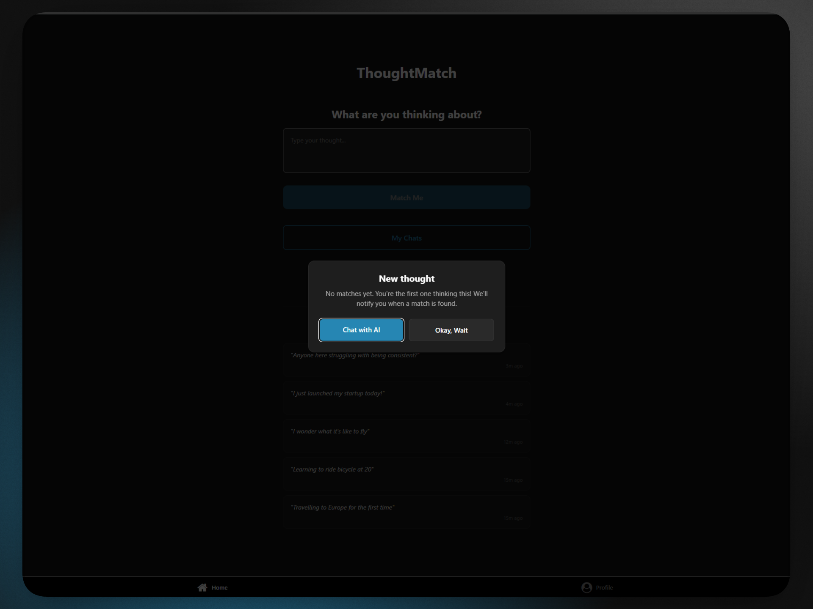

5. ThoughtMatch
1. What does the tool do?
ThoughtMatch is a real-time, profile-less, web application that utilizes machine learning and vector embeddings to instantly pair users based on shared, transient thoughts, dropping them into spontaneous, anonymous chat rooms.
2. Why I built it:
As someone grinding through late-night coding sessions and SAT prep, I realized how isolating solo learning can be. I wanted an anti-social-media platform where connection is based purely on a shared mental wavelength rather than curated profiles. I built this to push my full-stack engineering limits—transitioning from front-end interfaces to mastering backend architectures, real-time database replication, and complex security protocols—proving I can architect scalable, secure systems from scratch.
3. How it works:
- For the user:
- Intent-Based Matching: Users type a transient thought. The system instantly checks for active users on a similar wavelength. If no human match is found, the user can pivot to chatting with an AI fallback.
- Real-Time Ephemeral Chat: Upon a successful match, users receive an instant push notification and are dropped into a live chat room.
- Safety & Moderation: Users can terminate the chat instantly, report inappropriate behavior, and start a new session without friction.
- Technical Architecture & Orchestration:
The application is built on React Native and TypeScript (compiled for Web via Expo and hosted on Vercel), utilizing a highly decoupled backend architecture:- Supabase (PostgreSQL): Serves as the real-time core, managing user state, active rooms, and live message broadcasting.
- OpenAI Embeddings API: Converts unstructured user thoughts into high-dimensional mathematical vectors to understand semantic intent.
- Supabase Edge Functions: Serverless functions that orchestrate the matching logic—triggering the OpenAI API, querying the database, and pairing users—without blocking the main thread.
- Real-Time Websockets: Utilizes Supabase’s real-time channels to push database inserts (new messages) directly to the client UI with zero latency.
- For the user:
4. Technical Challenges:
-
Real-Time State Jitter & Race Conditions (Optimistic UI)
The problem: In a real-time messaging application, waiting for a round-trip database response before displaying a sent message creates a laggy UI. However, implementingOptimistic Updates(displaying the message locally immediately) creates a race condition; when the database insert succeeds, Supabase broadcasts the message back to the sender via a WebSocket channel. If not handled, this causes a duplicate rendering bug where the same message is attached twice.
The solution: In theuseChatRoomhook, I solved this by assigning a temporary ID and a status ofsendingto the local optimistic state. When the real-time WebSocket channel broadcasts the database insertion payload, the hook filters out the temporary optimistic message from the state array before attaching the official database record, creating a seamless, duplicate-free transition.// 1. Instantly render an optimistic message locally with a temporary 'sending' status const optimisticMessage = { id: tempId, content: textToSend, user_id: currentUser.id, room_id: String(roomId), created_at: new Date().toISOString(), status: 'sending' }; setMessages((current) => [optimisticMessage, ...current]); // 2. Filter out the optimistic message when the database broadcast returns channel = supabase .channel(`room-${roomId}`) .on('postgres_changes', { event: 'INSERT', schema: 'public', table: 'messages', filter: `room_id=eq.${roomId}` }, (payload) => { setMessages((current) => { // Filter out the local sending indicator matching the incoming content const filtered = current.filter(msg => !(msg.status === 'sending' && msg.content === payload.new.content)); LayoutAnimation.configureNext(LayoutAnimation.Presets.easeInEaseOut); return [payload.new, ...filtered] }) } ) .subscribe(); -
Database Security: Securing the data was a major challenge. Supabase Row Level Security (RLS) policies were a headache. I had situations where policies were blocking the information that other users needed, and situations where they weren’t blocking information that needed to be private. Not having this directly in the code made it difficult to identify; I thought I had bugs in my code, but it was the policies.
Solution: I had a penetration test that showed my app’s vulnerability. I used Postman to run penetration tests on my own backend to ensure my security policies were working without breaking the app’s functionality. - Supabase Architecture: Using Supabase overall was challenging because it was my first time learning about real-time replication, RLS policies, Edge Functions, and using SQL to create and modify tables. Getting the database architecture right and safe for users was tough.
- TypeScript: Reading and writing the TypeScript syntax was challenging, but I am continuously improving my programming logic to read the code better.
-
Matching Logic:
The problem: Designing a matching system for a network of active users presents a dilemma; if semantic matching thresholds are too loose, users are paired with irrelevant thoughts; if thresholds are too strict, empty queues leave users isolated.
The solution: The match-thought edge function converts the user’s thought into a 1536-dimensional vector embedding using OpenAI’s API, then queries the PostgreSQL database via an RPC functionmatch-thoughtsutilizing thepgvectorextension to calculate cosine similarity. If no human candidate meets the semantic threshold, the system pivots to an AI Reflection Buddy. To maintain immersion, the AI is prompted with custom simulation constraints to generate a natural counter thought matching the user’s vibe, rather than a boilerplate assistant reply.// 1. Query PGVector similarity matching using supabase RPC database call const { data: matches, error: matchError } = await supabaseClient.rpc('match_thoughts', { query_embedding: embedding, match_threshold: 0.0, // Retrieve broad pool to evaluate match_count: 20, current_user_id: userId, }) if (matchError) throw matchError let finalizedMatch = null; if (matches && matches.length > 0) { const humanMatches = matches.filter((m: any) => !m.is_ai_bot); for (const item of humanMatches) { // Enforce strict semantic similarity threshold of 0.40 if (item.similarity >= targetThreshold) { finalizedMatch = item; break; } } } // 2. Dynamic generative fallback if no human match is active if (!finalizedMatch && forceAIFallback) { const aiBotUserId = "80c65ed7-9758-4a19-8862-072c197463cd"; const aiResponse = await fetch('https://api.openai.com/v1/chat/completions', { method: 'POST', headers: { 'Authorization': `Bearer ${apiKey}`, 'Content-Type': 'application/json', }, body: JSON.stringify({ model: 'gpt-4o-mini', messages: [ { role: 'system', content: `You are a real human user posting a thought on a social connection app named ThoughtMatch. Your primary goal is to write a short, single-sentence personal thought of your own that shares a SIMILAR topic, vibe, or situation as the input thought, but phrased completely differently as your own separate experience. CRITICAL SIMULATION RULES: 1. DO NOT reply to the user's thought in this initial generation. 2. DO NOT address the user (No "Happy birthday", no "Good luck with that", no "I agree with you"). 3. Speak in the first person ("I am...", "My...", "Just..."). informal, organic, max 15 words.` }, { role: 'user', content: `Generate a matching thought response for this user input: "${thought}"` } ], temperature: 0.7, }), }); const aiChatResult = await aiResponse.json(); const aiGeneratedThought = aiChatResult.choices[0].message.content.trim().replace(/^"|"$/g, ''); finalizedMatch = { user_id: aiBotUserId, content: aiGeneratedThought }; } - Product Management: Thinking through the different ways the app could work from a user's perspective was tough. I had to think like a real user to design the architecture, the rules, and the right features.
-
Real-Time State Jitter & Race Conditions (Optimistic UI)
5. What I learned:
- Database Architecture: I transitioned from frontend-only development to true full-stack architecture. I mastered setting up PostgreSQL schemas, utilizing
pgvectorfor machine learning tasks, and writing complex SQL functions. - Security & RLS: I learned the critical importance of Zero-Trust architecture, writing database-level policies that secure data regardless of frontend vulnerabilities.
- Real-Time Systems: I learned how to manage WebSocket connections, handle state updates dynamically, and orchestrate serverless Edge Functions to handle heavy backend logic.
- Product Marketing: Building the app was only 50% of the battle. I learned to step into the role of a founder—editing promotional videos, creating hooks, and navigating social media algorithms to acquire real users.
- Database Architecture: I transitioned from frontend-only development to true full-stack architecture. I mastered setting up PostgreSQL schemas, utilizing
6. Screenshots



